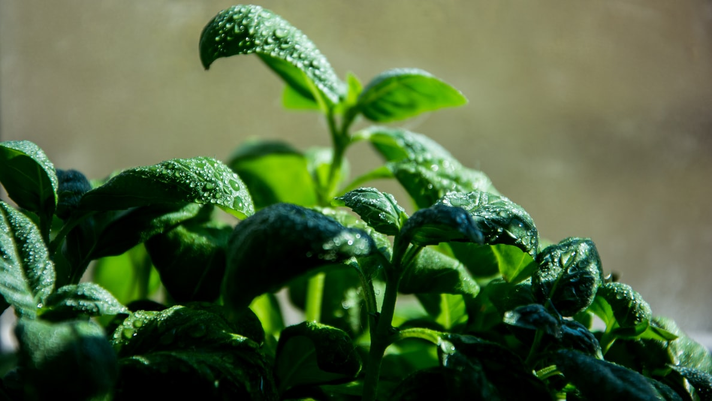

<ion-header mode="ios">
  <ion-toolbar mode="ios" style="padding-top: 80px;">
    <ion-title>Monitor</ion-title>
    <ion-buttons  style="margin-left: 20px;">
      <ion-button color="dark" (click)="navigate()"> 
        <ion-icon name="arrow-back-circle-sharp"></ion-icon>
      </ion-button>
    </ion-buttons>
  </ion-toolbar>
</ion-header>

<ion-content>
  <ion-refresher slot="fixed" 
  (ionRefresh)="ionRefresh($event)" 
  (ionPull)="ionPull($event)" 
  (ionStart)="ionStart($event)">
    <ion-refresher-content
      pullingIcon="arrow-dropdown"
      pullingText="desliza para actualizar"
      refreshingSpinner="circles"
      refreshingText="Actualizando...">
    </ion-refresher-content>
  </ion-refresher>
  <ion-card mode="ios" class="card-bg" *ngFor="let x of registro">
    
    <ion-card-header>
    <ion-card-subtitle>{{x.Nombre}}</ion-card-subtitle>
    <ion-card-title>{{x.Valor}}</ion-card-title>
    </ion-card-header>
    <ion-card-content>
  <p style="text-align: center;"> desliza hacia abajo para actualizar los datos</p>
    </ion-card-content>
    </ion-card>

    <ion-card mode="ios" class="welcome-card">
      <ion-card-header>
        <ion-card-subtitle>Datos de humedad </ion-card-subtitle>
      </ion-card-header>
      <ion-card-content>
        <div class="ion-padding">
          <div style="display: block"><canvas id="yudhatp-chart"></canvas></div>
        </div>
      </ion-card-content>
    </ion-card>
</ion-content>
